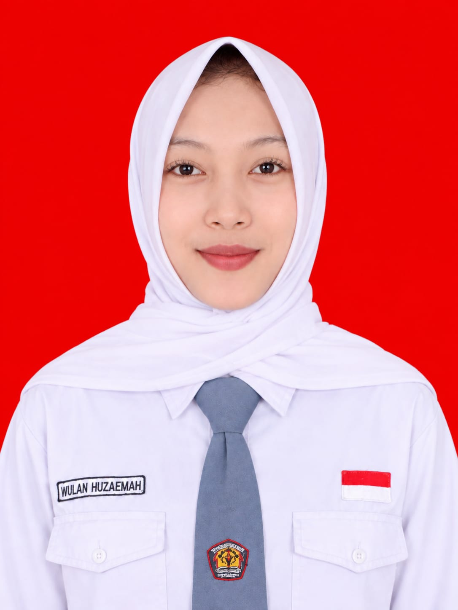

About Me
Halo! Saya Wulan Huzaemah, siswi SMKN 1 Kawali jurusan Rekayasa Perangkat Lunak (RPL). Saya memiliki ketertarikan di bidang teknologi, khususnya pengembangan website dan desain antarmuka pengguna.
Selama belajar di sekolah, saya telah mengenal beberapa teknologi dan bahasa pemrograman seperti HTML, CSS, JavaScript, PHP, dan Laravel. Saya juga mempelajari dasar-dasar UI/UX Design.
Saat ini, saya sedang menjalani Praktik Kerja Lapangan (PKL) di PT Inovindo Digital Bandung sebagai kesempatan untuk mengembangkan kemampuan, menambah pengalaman, serta belajar menghadapi dunia kerja secara langsung.
My Experience
Praktik Kerja Lapangan (PKL)
PT Inovindo Digital Bandung
Mengikuti kegiatan Praktik Kerja Lapangan untuk memperoleh pengalaman di lingkungan kerja, mengembangkan kemampuan di bidang teknologi, serta menerapkan ilmu yang telah dipelajari selama di sekolah.
Academic Projects
SMKN 1 Kawali - Rekayasa Perangkat Lunak
Mengerjakan berbagai proyek pembelajaran, seperti pembuatan website perpustakaan, company profile, website ekstrakurikuler, dan proyek lainnya menggunakan teknologi web dan bahasa pemrograman.